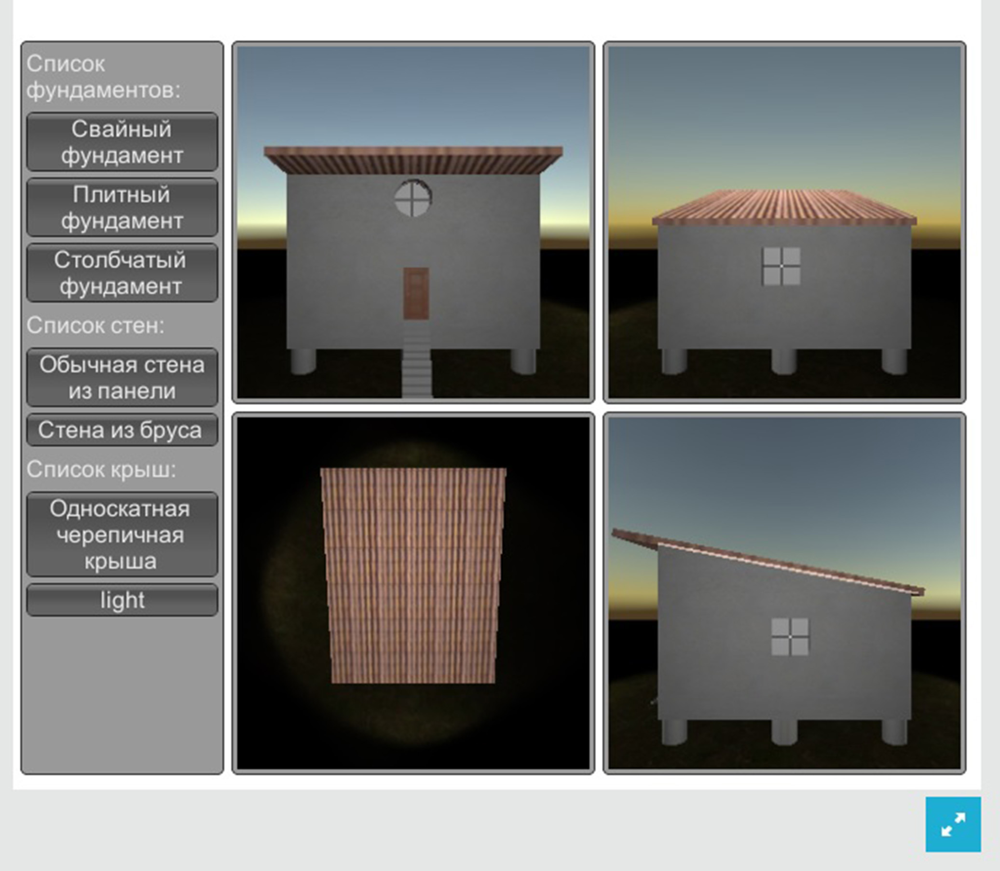
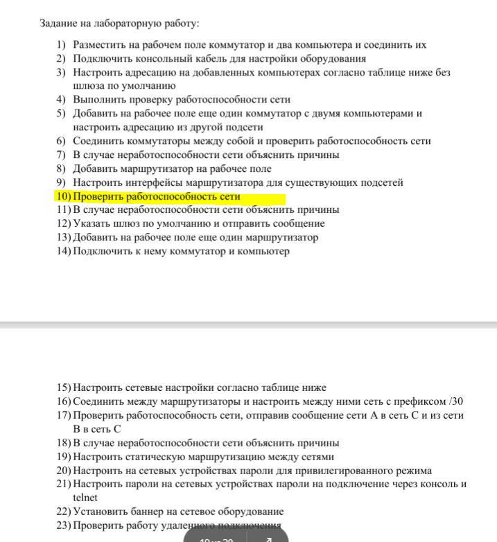
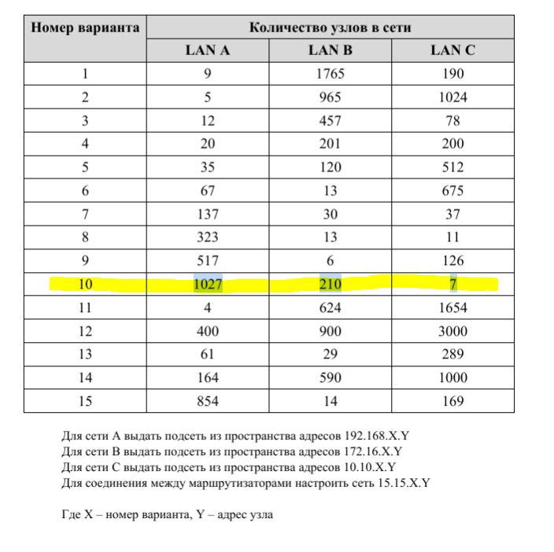
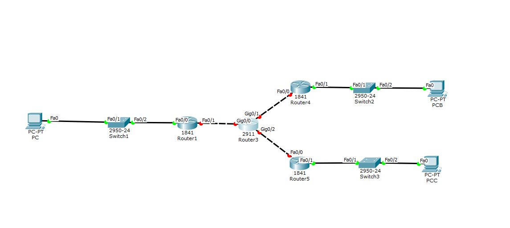
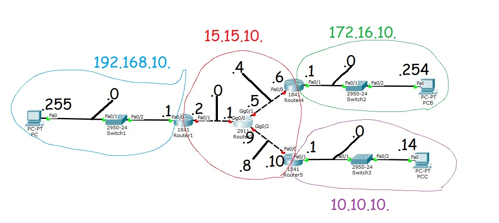
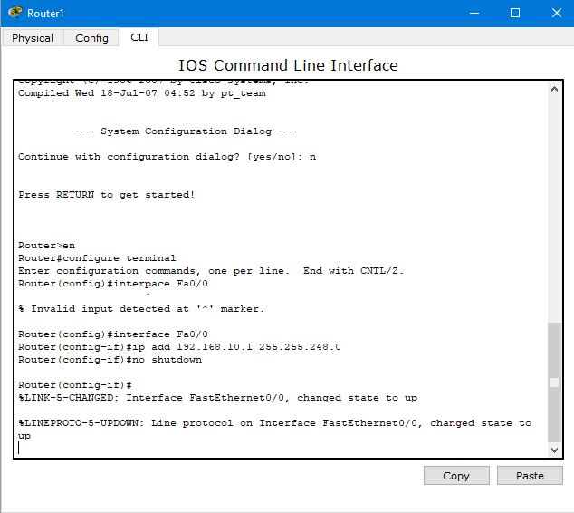
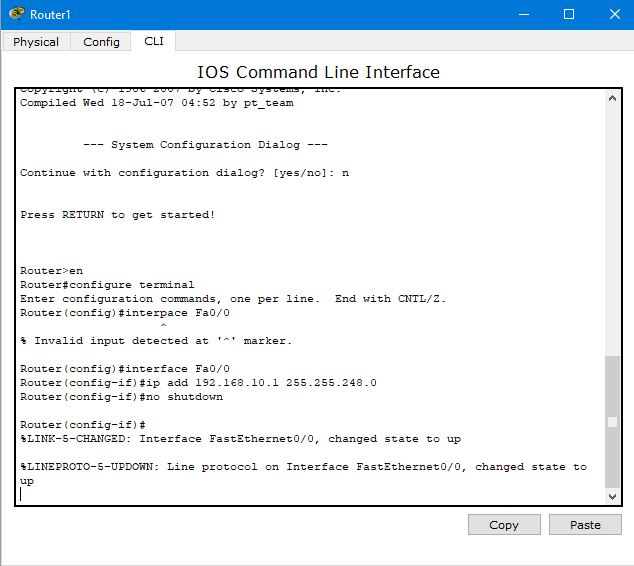
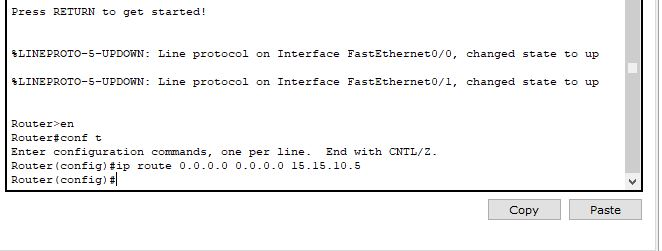
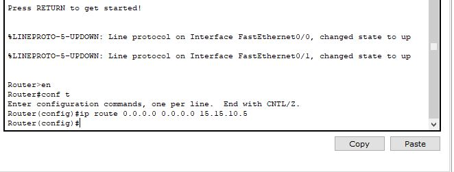

Отчёт по 1 Лабораторной работе
Экосистема разработки программ с открытым кодом
- 1. Зарегистрироваться на GitHub
- 2. Создание репозитория
- 3. Создание личной Страницы-Отчёта
- 4. Загрузить отчёт в репозиторий
Статус: Выполнено.
Отчёт по 2 лабораторной работе
Разработка простого веб-приложения.
Проектирование и разработка индивидуального или коллективного веб-приложения с использованием html, css, js + json, xml 
1. Собрать команду для разработки веб-приложения и распределить роли.
2. Разработать макет страницы веб-приложения.
3. Прописать стили страницы. Исходный код на css.
4. Прописать js функционал и реализовать возможность чтения json.
Роли: Управленец и системный программист Состав команды:
1. Данилин Алексей: студент группы ИДМ-19-06 - прикладной программист
2. Щапова Евгения: студентка группы ИДМ-19-03 - научный исследователь и бизнес-аналитик
3. Жидков Михаил: студент группы ИДМ-19-06 - администратор и специалист по консалтингу
4. Костиков Михаил: студент группы ИДМ-19-06 - управленец и системный программист
5. Старков Дмитрий: студент группы ИДМ-19-06 - внедренец
В качестве руководителя проекта и системного программиста, моя задача состояла в создании команды разработчиков на проект, назначении задач другим членам команды,осуществление контроля за выполением данных задач и проведение мозгового штурма по вопросам реализации проекта.
Отчёт по 3 лабораторной работе
Задание: Проверить работоспособность сети. 
1. Построить топологию сети
2. Адрессация в соответсвтии с вариантом
 
 

3. Маршрутизация
 
 4. Проверка Работоспособности: Так, как в сети А слишком много узлов (1027) необходимо брать маску с префиксом /21, из-за чего структура адресса 192.168.X.Y,где Х-номер варианта (10) нарушается.